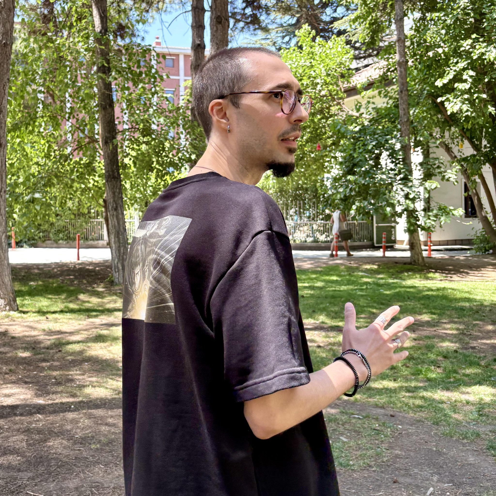

Bahadır Bektöre

Education
- Associate's Degree, Web Design and Coding - Anadolu University - Grade: Honor Student
- Bachelor's Degree, Sociology - Anadolu University - Grade: Honor Student
- Master of Arts - MA, History - Eskişehir Osmangazi University - Grade: Withdrew
Skills
- Python
- Web Development
- Arduino
- HTML
- CSS
- JavaScript
Licenses and Certifications
- Certificate in Pedagogical Formation - Anadolu University
Languages
- English - Professional Working Proficiency
- German - Elementary Proficiency
- Japanese - Elementary Proficiency
- Turkish - Native or Bilingual Proficiency
- Turkish, Ottoman (1500-1928) - Limited Working Proficiency
Other